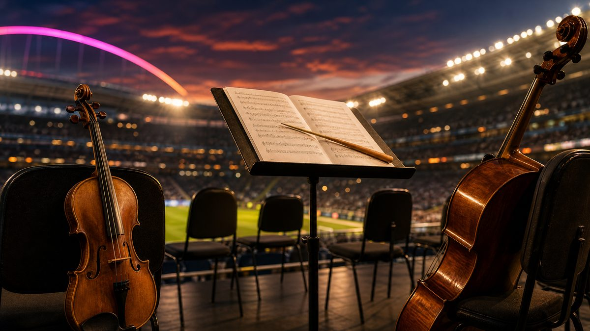

Густаво Дудамел ще обедини Ню Йорк и Венецуела на финала на Мондиал 2026

Финалът на Световното първенство по футбол 2026 година ще предложи нещо безпрецедентно — не само битка за трофея между Испания и Аржентина, а и историческа музикална среща. На 19 юли, преди началото на мача на MetLife Stadium в Ню Джърси, диригентът Густаво Дудамел ще застане начело на обединен състав от Нюйоркската филхармония и венецуелския Симон Боливар оркестър. Това ще е първото съвместно изпълнение на двата ансамбъла в историята им, потвърждават Billboard и The Fader.
Музика в памет на Венецуела
Партньорството не е случайно. На 24 юни две земетресения с магнитуд 7,2 и 7,5 разтърсиха Венецуела, оставяйки страната пред тежко изпитание за възстановяване. Роденият във Венецуела Дудамел, който от септември поема поста музикален директор на Нюйоркската филхармония, превръща сцената на най-мащабното спортно събитие в света в жест на солидарност — момент, в който класическата музика застава редом с най-големите имена на поп сцената, за да разкаже история на общност и надежда.
Полувреме, което влиза в историята
Изявата на Дудамел е част от първото по рода си шоу на полувремето във финал на Световно първенство, което тази година включва и Мадона, Шакира, Джъстин Бийбър, BTS и Бърна Бой, редом с детския хор на училище PS22 в Ню Йорк, изпълняващ заедно с Coldplay. Част от приходите от билетите подкрепят образователен фонд на ФИФА за деца по света. Финалната нота обаче остава една и съща, независимо дали е изпята от глобална звезда или изсвирена от цял оркестър: музиката говори там, където думите не достигат.
Музиката на Дудамел разказва историята на цяла страна без нито дума текст. Твоята история също заслужава песен, която да я разкаже.
Разкажи я с глас за 2 минути — за 19,90 €